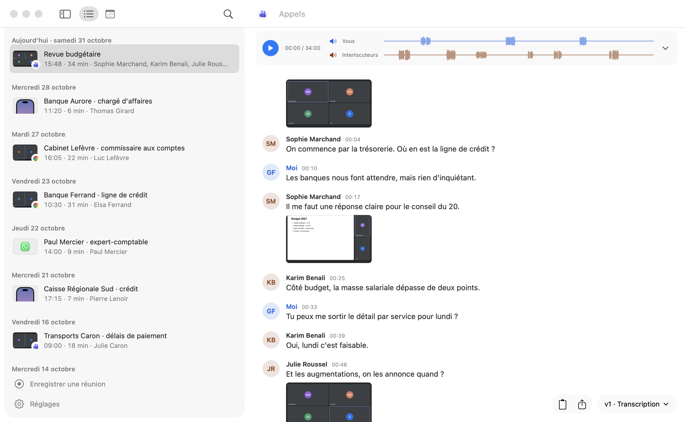
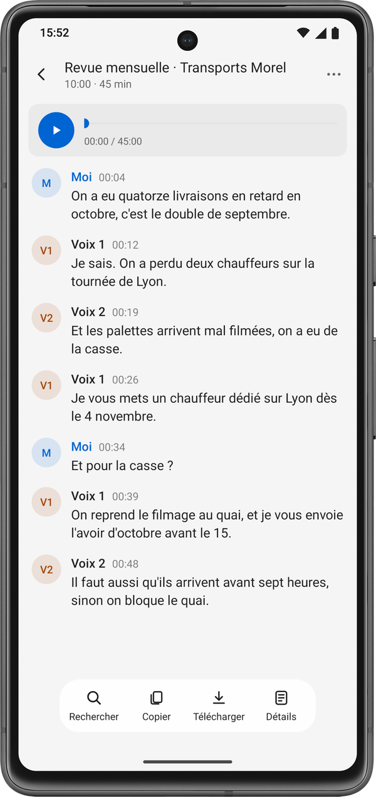
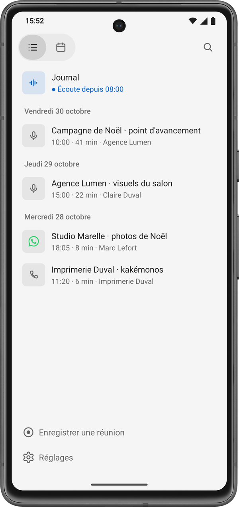
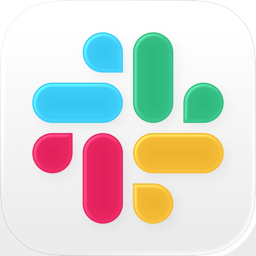
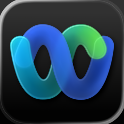
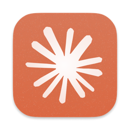
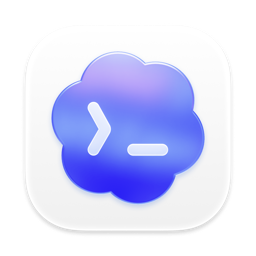
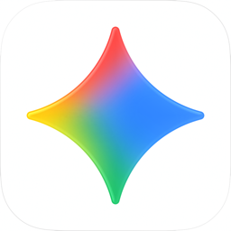

Souvenez-vous de tout
Vos conversations mémorisées, transcrites sur votre Mac sans y penser et accessibles à vos assistants IA.




 5 appels lus : la revue budgétaire et 4 appels avec les banques
5 appels lus : la revue budgétaire et 4 appels avec les banques
Deux banques sur trois renouvellent, mais pas aux mêmes conditions :
- « On renouvelle, mais avec un covenant sur la dette nette. » · Banque Aurore, 28 oct.
- « On peut monter à trois millions si vous nous donnez vos prévisions de trésorerie. » · Banque Ferrand, 23 oct.
- « Le comité ne se réunit pas avant décembre. » · Caisse Régionale Sud, 21 oct.
En revue budgétaire, vous avez dit « rien d'inquiétant » : c'est vrai pour deux banques, pas pour la Caisse Régionale. À dire à Sophie avant le conseil.
1 réunion lue : revue mensuelle avec Transports Morel, 29 oct.
Trois engagements, le premier dès mercredi :
- « Je vous mets un chauffeur dédié sur Lyon dès le 4 novembre. » · les retards
- « Je vous envoie l'avoir d'octobre avant le 15. » · la casse
- « Sept heures, c'est noté, je le mets dans le contrat. » · l'arrivée au quai
Le filmage des palettes au quai n'a pas de date. Je peux préparer un mail qui confirme les quatre points.
5 notes vocales lues, du 27 au 30 oct.
- Relancer l'agence pour les visuels du salon, avant mercredi
- Vérifier le budget LinkedIn : 80 % du trimestre déjà dépensés
- Noël : le prénom dans l'objet du mail
- Webinaire de jeudi : les chiffres de l'étude en premier
- Réserver le resto pour l'anniversaire de Léa, samedi
Je peux ajouter les deux premières à vos rappels.
macOS 15 ou plus récent · Mac M1 ou plus récent
Retient ce qui se dit sur


et s’en souvient pour




Vos appels rejoignent votre mémoire
Votre assistant la consulte quand vous lui posez une question.
- Une seule installation
Une ligne à copier, deux autorisations, celle de l'écran si vous voulez les captures. Ensuite, il démarre avec votre Mac.

- Une mémoire qui se constitue toute seule
Zoom, Teams, Meet, FaceTime, WhatsApp et les appels de votre iPhone pris sur le Mac : chaque appel est retenu dès qu'il commence, et transcrit dès qu'il se termine.

- Ce qui se dit autour d'une table
Un rendez-vous dans une salle, sans visio : posez le Mac sur la table et cliquez sur Enregistrer une réunion. La conversation rejoint votre mémoire comme un appel.

- Les appels de votre iPhone
Prenez-les sur le Mac, ils rejoignent votre mémoire. Rien à installer sur l'iPhone.
- Raccrochez : votre assistant est déjà au courant
Demandez ce qui a été promis, décidé ou oublié : Claude, Codex et les autres assistants consultent votre mémoire et vous répondent, avec l'appel et l'heure de chaque citation. Rien à copier-coller.

- L'audio reste sur votre Mac
La transcription se fait sur place, sans compte ni serveur. L'audio ne part en ligne que si vous y placez vos conversations.

Installation
macOS 15 ou plus récent · Mac M1 ou plus récent
- CollerLa ligne dans le Terminal : ⌘ Espace, tapez « Terminal », puis Entrée.
- SuivreLe Terminal demande les autorisations une à une (le micro, le son des apps, puis l'écran, facultatif) : cliquez sur Autoriser quand macOS le demande. Claude reçoit l'accès à vos conversations et, si Claude Code est connecté à votre compte, relit chacune d'elles : tout se coupe dans Réglages › Intégrations › Agents. Claude Desktop, s'il est ouvert, se ferme et se rouvre tout seul.
- LireLisez le texte affiché après le bip : sa transcription s'affiche en regard, et la lecture devient votre première conversation. Demandez ensuite à Claude : « Résume ma dernière conversation ».
- CollerLa ligne dans le Terminal : ⌘ Espace, tapez « Terminal », puis Entrée.
- SuivreLe Terminal demande les autorisations une à une (le micro, le son des apps, puis l'écran, facultatif) : cliquez sur Autoriser quand macOS le demande. Codex, s'il est installé, reçoit l'accès à vos conversations : cela se coupe dans Réglages › Intégrations › Agents.
- LireLisez le texte affiché après le bip : sa transcription s'affiche en regard. Cette lecture est votre première conversation : cliquez sur l'icône de Callrecorder, dans la barre des menus.
Claude ne voit pas vos appels ? Quittez et relancez Claude.
Une erreur ? Collez le texte du Terminal dans votre assistant.